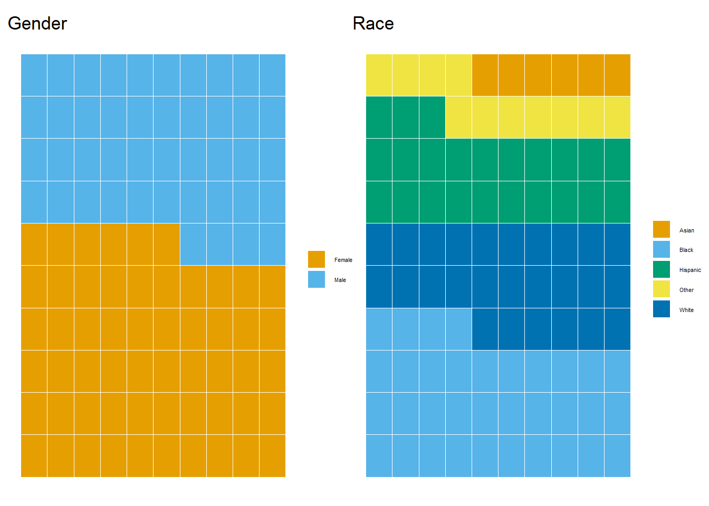
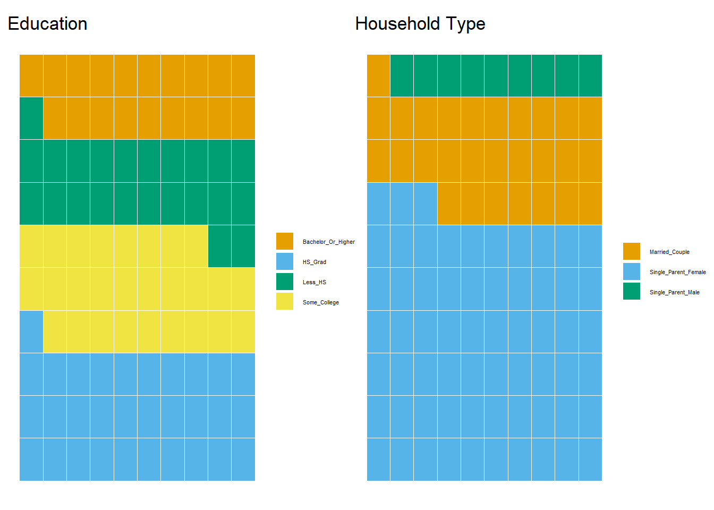
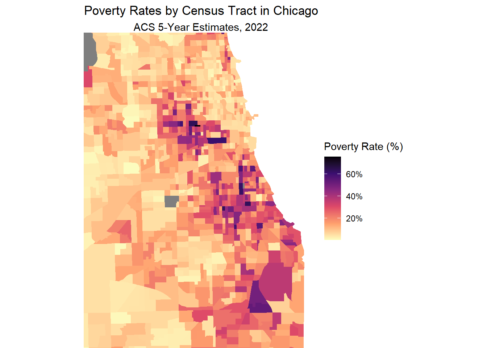

#Uncheck and insert your API KEY
#census_api_key("YOUR_API_KEY_HERE", install=TRUE)3 Archive
3.1 Introduction
Chicago is a city with a diverse demographic and economic landscape. However, it faces significant challenges in relation to poverty. This research proposal aims to unravel the layers of poverty in the city, identifying key areas of deprivation that affect households. In the final project, I wish to examine key areas of deprivation such as access to shelter, healthcare, education and other indicators of living standards.
3.1.1 Research Questions
The analysis is guided by two research questions:
RQ1 - What are the key demographical factors associated with poverty in Chicago?
RQ2 - How does housing affordability impact the prevalence of poverty in Chicago?
3.1.2 Methods
Data for this analysis was sourced from the ACS 5-Year Estimates for 2022. I’ve chosen to focus on housing accessibility for this proposal. Data on population demographics, poverty headcounts, and housing costs were extracted using the tidycensus package. The analysis focused on census tracts within Cook County to provide a more granular view of poverty in Chicago.
3.1.3 Census API Key Configuration
To proceed, you must have a Census API key. Visit the Census Bureau’s website for instructions on obtaining one. (More info to get one in the main README document).
The following block stores your Census API key in your environment.
4 Descriptive Statistics
In this section, we delve into the heart of Chicago’s socioeconomic fabric through a comprehensive examination of descriptive statistics drawn from the American Community Survey (ACS) 5-Year Estimates for 2022. By dissecting data across various census tracts within Cook County, we aim to uncover the underlying patterns and distributions of poverty, housing affordability, and demographic factors that shape the city’s landscape. From median household incomes to poverty rates, and housing costs, each statistic not only quantifies the challenges faced by many Chicagoans but also sets the groundwork for deeper analysis.
## Set your desired variables
variables_poverty <- c( #Race
White = "B17001A_002",
Black = "B17001B_002",
Native_American = "B17001C_002",
Asian = "B17001D_002",
Hawaiian = "B17001E_002",
Other = "B17001F_002",
Hispanic = "B17001I_002",
# Gender
Male = "B17001_003",
Female = "B17001_017",
# Educational Attainment
Less_HS_male = "B17003_004",
HS_Grad_male = "B17003_005",
Some_College_male = "B17003_006",
Bachelor_Or_Higher_male = "B17003_007",
Less_HS_female = "B17003_009",
HS_Grad_female = "B17003_010",
Some_College_female = "B17003_011",
Bachelor_Or_Higher_female = "B17003_012",
# Poverty status of related children, by family type
Married_Couple = "B17006_003",
Single_Parent_Male = "B17006_008",
Single_Parent_Female = "B17006_012"
)
# Pull data for Chicago at the county level
chicago_data_poverty <- get_acs(geography = "county",
variables = variables_poverty,
state = "IL",
county = "Cook",
year = 2022,
survey = "acs5")Getting data from the 2018-2022 5-year ACScombined_data_poverty <- chicago_data_poverty %>%
mutate(Category = recode(variable,
"Less_HS_male" = "Less_HS",
"HS_Grad_male" = "HS_Grad",
"Some_College_male" = "Some_College",
"Bachelor_Or_Higher_male" = "Bachelor_Or_Higher",
"Less_HS_female" = "Less_HS",
"HS_Grad_female" = "HS_Grad",
"Some_College_female" = "Some_College",
"Bachelor_Or_Higher_female" = "Bachelor_Or_Higher"),
Facet = case_when(
Category %in% c("Male", "Female") ~ "Gender",
Category %in% c("White", "Black", "Native_American", "Asian", "Hawaiian", "Other", "Hispanic") ~ "Race",
Category %in% c("Less_HS", "HS_Grad", "Some_College", "Bachelor_Or_Higher") ~ "Education",
Category %in% c("Married_Couple", "Single_Parent_Male", "Single_Parent_Female") ~ "Household Type"
)) %>%
select(-GEOID, -NAME, -variable, -moe) # Remove unnecessary columns# Reorder 'Category' so that the heaviest composition falls to the bottom
combined_data_poverty <- combined_data_poverty %>%
group_by(Category) %>%
summarise(Total = sum(estimate, na.rm = TRUE)) %>%
arrange(desc(Total)) %>%
ungroup() %>%
mutate(Category = factor(Category, levels = Category)) %>%
right_join(combined_data_poverty, by = "Category")
# Original Okabe-Ito color palette
okabe_ito_palette <- c("#E69F00", "#56B4E9", "#009E73", "#F0E442", "#0072B2", "#D55E00", "#CC79A7", "#000000")
# Number of categories in your data
num_categories <- length(unique(combined_data_poverty$Category))
# Replicate the palette to cover all categories
replicated_palette <- rep(okabe_ito_palette, length.out = num_categories)
# Function to create a waffle chart for a given facet with adjusted legend
create_facet_waffle <- function(data, facet_name) {
filtered_data <- data %>% filter(Facet == facet_name)
ggplot(filtered_data, aes(fill = Category, values = estimate)) +
geom_waffle(color = "white", make_proportional = TRUE, flip = TRUE, n_rows = 10) +
labs(title = facet_name, fill = "Category") +
scale_fill_manual(values = replicated_palette) +
theme_void() +
theme(legend.position = "right",
legend.key.size = unit(0.5, "cm"), # Adjust legend key size
legend.text = element_text(size = 4), # Adjust legend text size
legend.title = element_blank()) # Adjust legend title size
}
# Create individual plots
plot_gender <- create_facet_waffle(combined_data_poverty, "Gender")
plot_race <- create_facet_waffle(combined_data_poverty, "Race")
plot_education <- create_facet_waffle(combined_data_poverty, "Education")
plot_household <- create_facet_waffle(combined_data_poverty, "Household Type")# Combine the plots horizontally
combined_plot1 <- plot_gender | plot_race |
plot_layout(ncol = 2) # Arrange all plots in one row
combined_plot1
# Combine the plots horizontally
combined_plot2 <- plot_education | plot_household |
plot_layout(ncol = 2) # Arrange all plots in one row
combined_plot2
The first visualization is a descriptive chart. I chose to use a waffle chart to represent the demographic composition of poverty in Chicago. I think a waffle chart in particularly suited to do the job in giving the reader a sense of how the composition of poverty is divided along racial and gender lines. The reader can easily tell that there are more women in poverty, than there are men, and that Blacks comprise the largest racial component out of the total poverty headcount.
On Design - To ensure that the heaviest component falls to the bottom segment of the waffle, I had to aggregate and reorder each category by their relative frequencies (counts). I also thought that this would be a good opportunity to use the Okabe-Ito color scheme that is accessible to people with color vision deficiency.
4.1 Plot 2 - WIP
# Define the limits of your bounding box
xlim <- c(-87.9, -87.5)
ylim <- c(41.6, 42.0)
#Note: Adjust these values based on your area of interest
# Create the choropleth map with zoom to the bounding box
chart2 <- ggplot(chicago_tracts_poverty) +
geom_sf(aes(fill = poverty_rate), color = NA) +
scale_fill_viridis_c(option = "magma", direction = -1,
labels = scales::percent_format(scale = 1),
name = "Poverty Rate (%)") +
labs(title = "Poverty Rates by Census Tract in Chicago",
subtitle = "ACS 5-Year Estimates, 2022") +
theme_void() +
theme(legend.position = "right",
plot.title = element_text(hjust = 0.5),
plot.subtitle = element_text(hjust = 0.5)) +
coord_sf(xlim = xlim, ylim = ylim, expand = FALSE)
chart2